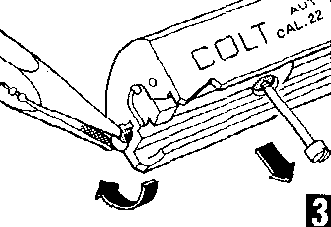

1. Removal of the extractor or firing pin is not necessary for routine maintenance and cleaning.
2. Be careful not to jar the recoil spring from its captured position.Click here to see why.


Grasp the end of the extractor (G) with pliers and rotate 180 degrees, then pull it forward. Thread grip screw (NN) into the firing pin stop (N). Pull it out. The firing pin (F), on firing pin spring (E), may then be removed through the rear of the slide.
Editor's Note (added):
1. Removal of the extractor or firing pin is not necessary for routine maintenance and cleaning.
2. Be careful not to jar the recoil spring from its captured position.Click here to see why.